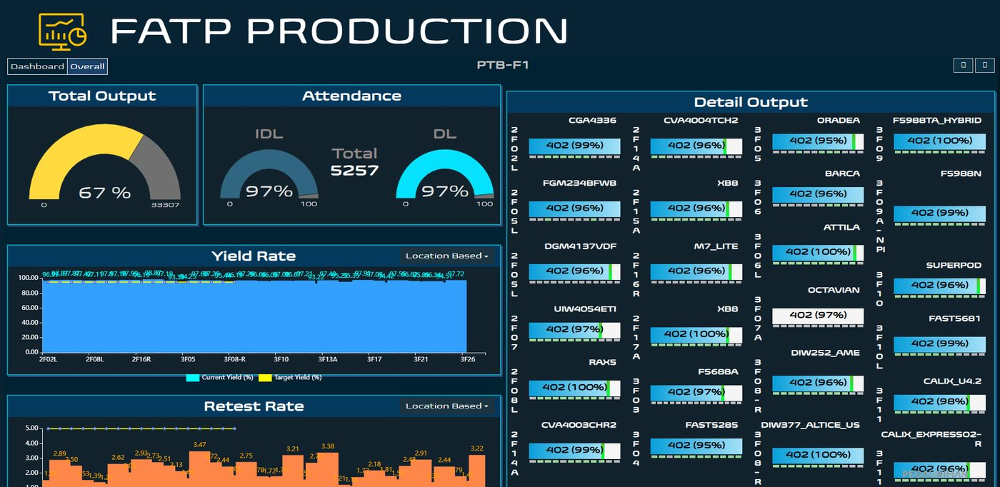
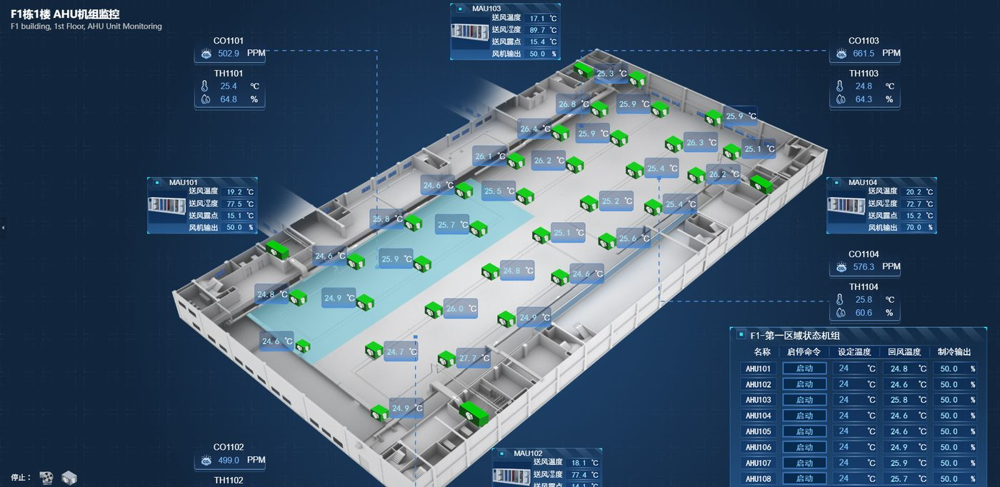
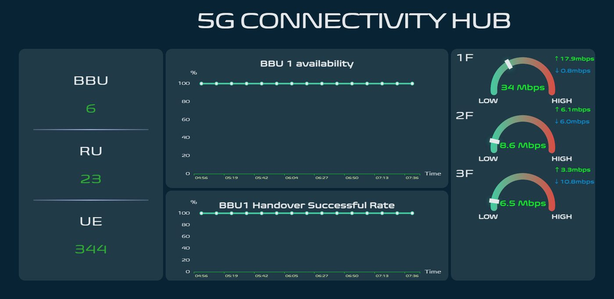
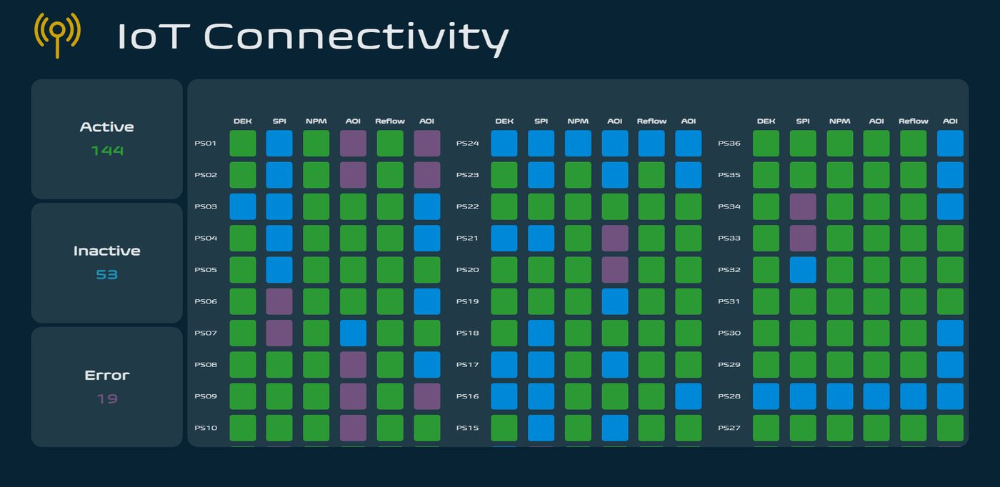
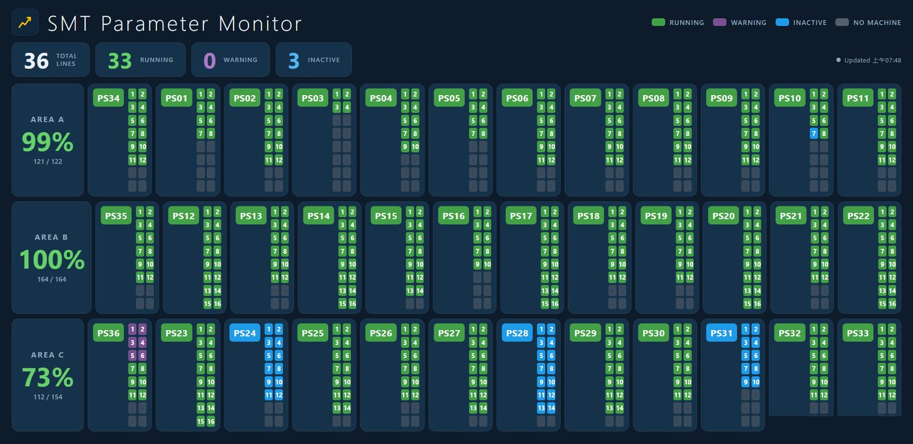
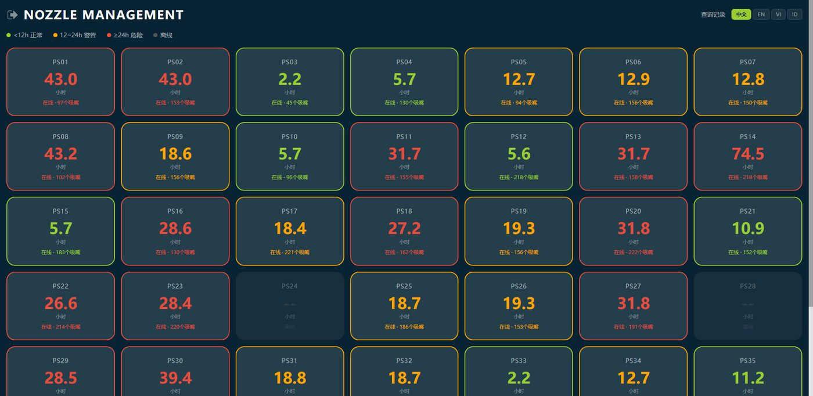
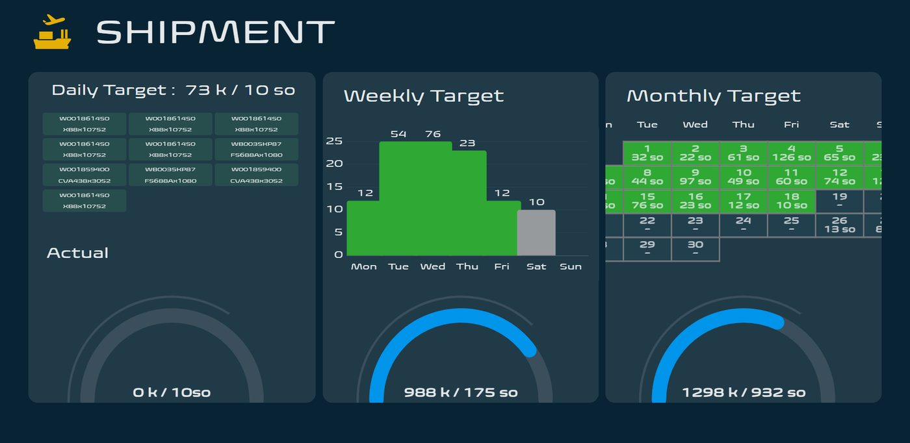
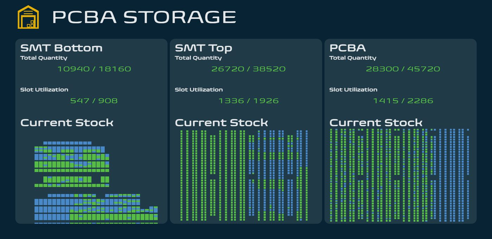
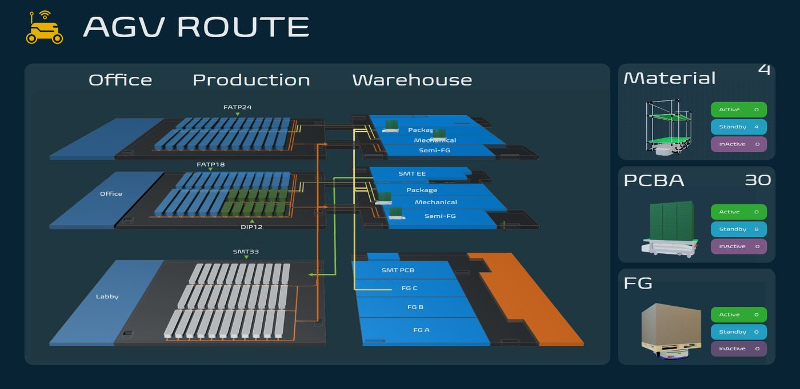

智慧工廠軟體解決方案 - 從現場感知、即時監控到決策支援的全鏈路自研系統
團隊長期駐廠開發，深諳製造業現場流程（SMT、FATP、倉儲、廠務、能源、人力）。全部系統自主研發、自主維護，從需求訪談、UI/UX、前後端開發、IoT 設備對接到跨區域部署一條龍完成。系統已在印尼、越南、中國、印度等多個製造廠區上線，涵蓋中文、英文、印尼語等多語言環境。
| 類別 | 涵蓋領域 |
|---|---|
| 生產管理 | 產線監控、換線交接、備料/領料、異常呼叫、機台保養、參數管理 |
| 廠務管理 | 報修、倉庫、資產借用、CCTV 調閱、手機權限、表單簽核 |
| 看板/監控 | 生產大屏、能源九宮格、SMT 九宮格、AGV 3D、5G 專網、出貨看板 |
| 人力/行政 | 工時、出勤、訓練、員工查詢、助理輔助、日報異常登記 |
| 公司系統 | 能源管理、空調中央監控、智慧製造執行平台、流程平台、API 文件 |
| 工具 | 內部 AI、網盤、檔案格式轉換 |
訪談需求 → 原型 → 開發 → 上線 → 培訓，全流程交付
老舊表單系統翻新為 Web/看板化，低成本快速見效
設備數據採集、跨系統串聯、與甲方既有平台對接
多語言（中/英/印尼語）、多廠區平行上線與維運

出貨總量、人力量能、良率趨勢、重測率、數十條產線明細一屏盡覽
成效：主管到現場即掌握產線健康度，決策零等待

AHU/MAU 主機 3D 樓層模型，溫度、濕度、CO2 即時採樣
成效：環境異常即時可視，節能調度有據可依

基地台與終端連線監控、交遞成功率、各樓層速率儀表
成效：5G 覆蓋與品質 24h 掌握

36 條產線設備格狀即時狀態（上線/離線/異常）
成效：異常機台第一時間定位，減少停線等待

全廠 36 條產線各機台參數健康度、區域良率
成效：參數日常巡檢電子化，問題發現提前到發生當下

30+ 站點吸嘴使用時數分級管理（正常/警示/超期）
成效：耗材更換剛剛好，兼顧品質與成本

日/週/月目標達成、出貨數量與工單明細
成效：出貨達成率與交期風險即時透明

SMT 上下料與整板庫存即時數量、庫位使用率
成效：庫存水位一眼掌握，降低呆料與缺料風險

廠區 3D 模型 + 物料運輸路線與在途量，AGV 狀態
成效：物流動線可視化調度，對接自動化搬運場景